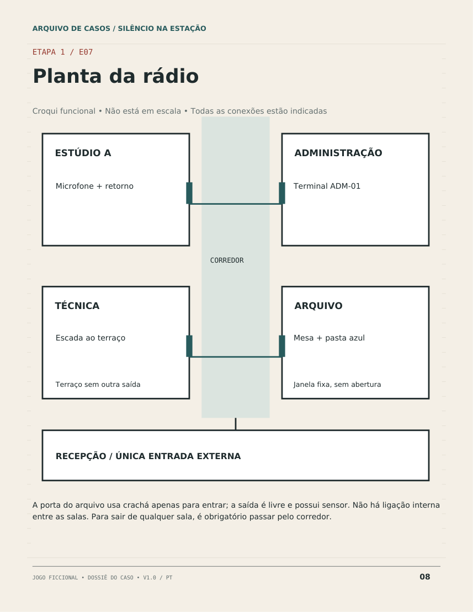
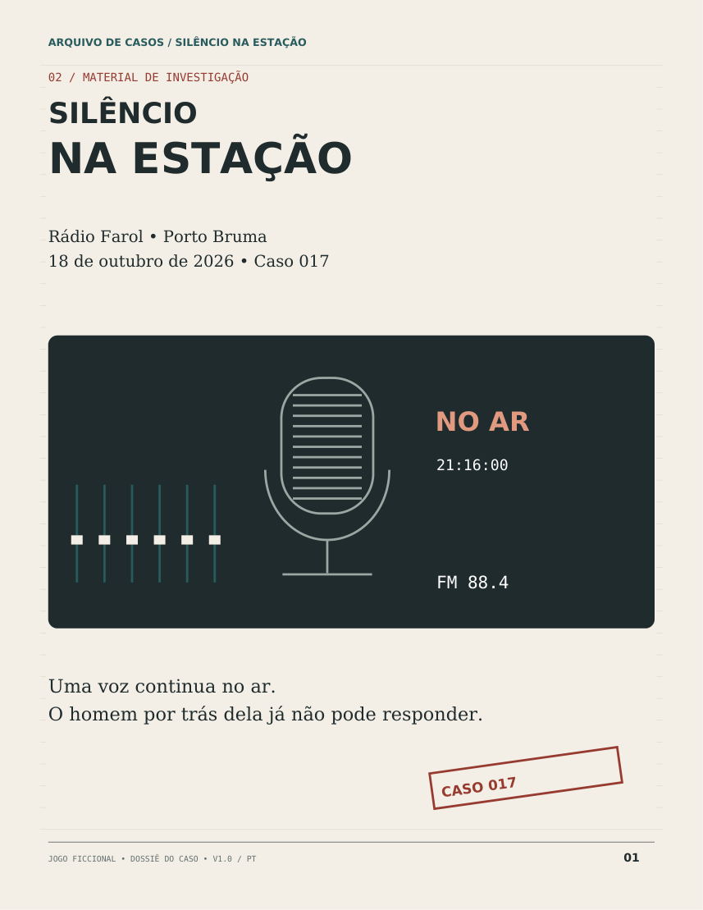

01
A DIRETORAClara Vilar
Ela conhece cada conta.
Uma noite em casa. Quatro suspeitos. Uma história que só faz sentido quando vocês juntam as provas.
SILÊNCIO NA ESTAÇÃO Jogo de investigação em PDF
Quero investigar ↗OFERTA ESPECIALR$ 29,90pagamento único

Na noite de aniversário da Rádio Farol, Leon Azevedo prometeu abrir as contas da emissora. Minutos depois, foi encontrado morto no arquivo.
A estranheza? Sua voz ainda havia sido ouvida na transmissão. E quatro pessoas dentro da rádio tinham algo a esconder.
“A Farol pertence a quem nos escuta.
Daqui a pouco, vamos abrir as contas.”
Agora, os documentos estão na sua mesa. Cabe a vocês descobrir quem está mentindo e provar por quê.
Nenhum rosto entrega a resposta.
Os documentos, talvez.
Ela conhece cada conta.
Ele mantém o sinal no ar.
Ela tem uma reputação a defender.
Ele quer saber para onde foi o dinheiro.
Personagens fictícios. Retratos ilustrativos do próprio produto.
Espalhe os documentos, confronte versões e monte a linha do tempo. Uma declaração pode parecer convincente. Até vocês encontrarem o registro que não combina com ela.
O ponto de partida da investigação.
Páginas reais do material. Impressão não incluída.
Leia o guia e abra o dossiê. Imprima as páginas ou leia na tela e faça suas anotações em papel.
Avancem pelas três etapas. Comparem pistas, desconfiem das versões e usem dicas quando precisarem.
Registrem o autor, o motivo e as provas. Só depois abram a solução para conferir o raciocínio.
Instruções, investigação, ajuda e resposta. Tudo o que você precisa para conduzir o caso está no produto principal.
3 páginas · preparação e regras
23 páginas · suspeitos, cartas, registros e folhas de investigação
4 páginas · ajuda opcional em três níveis
5 páginas · explicação das provas e desfecho
Não. Você pode ler na tela e usar papel para anotações. Para a experiência de mesa, imprima o dossiê. Na impressão, selecione a opção de ajustar à folha A4.
Não. Todos são investigadores. Ninguém precisa representar um suspeito nem atuar como mestre.
O ritmo depende da leitura e da conversa do grupo. A duração ainda será medida em testes com jogadores. Reserve uma sessão tranquila, sem cronômetro.
Não. Todas as evidências, dicas e solução estão no caso principal. Os complementos são histórias independentes e opcionais.
O fluxo está preparado para revisão. Pagamento e entrega automática serão conectados antes do lançamento. Nenhuma cobrança ou coleta de cartão está ativa nesta versão.
Sim, mas a surpresa do mesmo caso será menor depois de conhecer a solução. A experiência é especialmente indicada para a primeira investigação.
4 PDFs · 35 páginas · Português
O pagamento será integrado neste espaço. Você poderá concluir o pedido sem sair da página. Nesta prévia, nenhuma cobrança está ativa.
Seleção pronta! Confira o total no resumo do pedido. O pagamento será habilitado após a integração.
A compra só poderá ser realizada depois da integração e da revisão do produto.